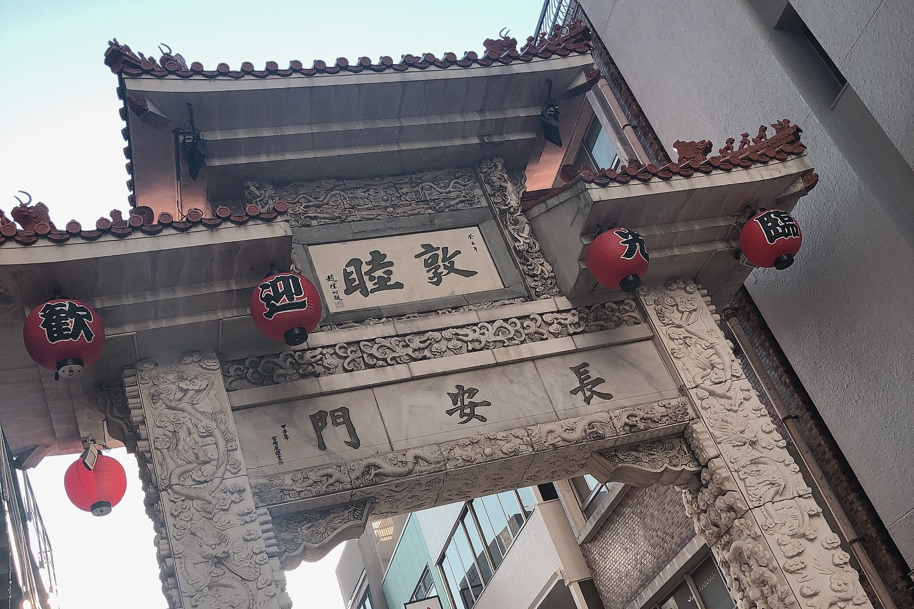
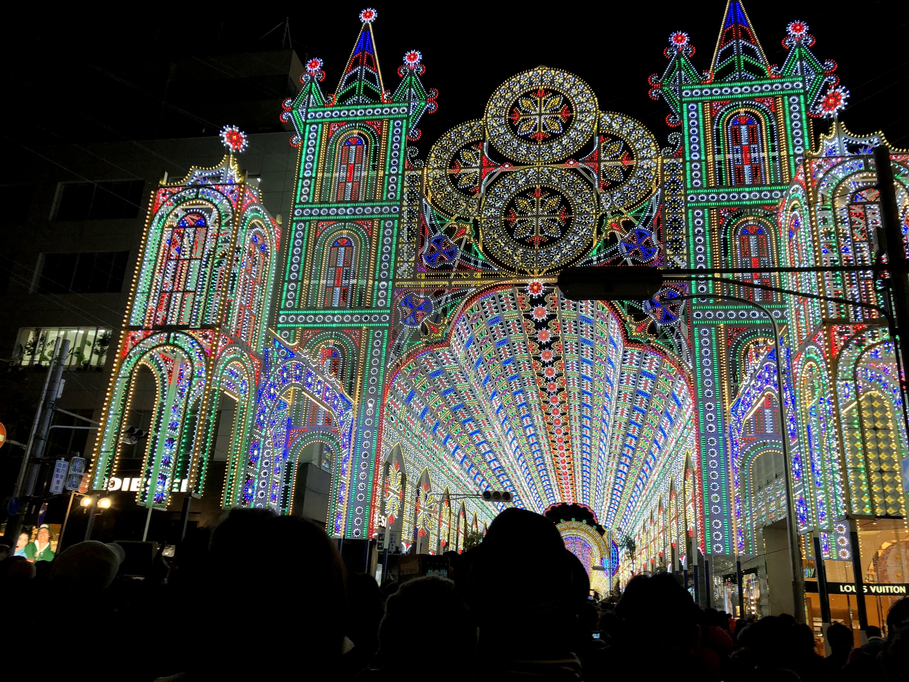

[概要] アンパンマンの世界を通して体験的に学べるミュージアムです。ショッピングモールは入場料無料です。
[営業時間] 10:00~17:00
[休業日] 毎月第2火曜日(7,8月以外)、その他休みあり
[アクセス] JR神戸駅から徒歩8分
[その他] 一階部分無料、有料エリア入場料:一人1,800円
誰もが知っている人気アニメ「アンパンマン」が詰まったミュージアムやで！

[概要] 100以上の店があり、観光客からも手軽に食べ歩きができることで人気！
[営業時間] 24時間
[休業日] なし
[アクセス] JR元町駅から徒歩3分
日本三大チャイナタウンの一つって知っとった？めっちゃお店あるし、絶対楽しめると思うで！

[概要] 神戸最大のショッピングモールと言っても過言ではない。
[営業時間] 10:00~21:00(店により異なる)
[休業日] 無休(臨時休業あり)
[アクセス] JR神戸駅徒歩約5分
ここ来たらなんでもそろうし、デートもできるし、夜景もきれいやし、最高やな！

[概要] 阪神・淡路大震災の発生を契機に鎮魂・追悼、街の復興を祈り、神戸への観光客を呼び戻す目的で毎年開催されている。
[開催時期] 12月上旬
[点灯時間] 17:00~22:00(曜日により異なる、繰り上げる可能性あり)
[アクセス] JR三ノ宮駅から徒歩10分、JR元町駅から徒歩11分
「ルミナリエきれぇ♡」って見るのもいいけど、神戸大好きのコウちゃんとしては、阪神淡路大震災のことも忘れてほしくないから、
それだけは、しっかり覚えといてな‼
もし、余裕あったら募金してるから協力してみるのもありやで‼

[概要] ハーブはもちろん、神戸の景色や夜景も楽しむことができます。
[営業時間] ハーブ園 10:00~17:00
[休業日] 1月中旬~2月中旬(ロープウェイの点検)
[その他] 料金は香りの庭園内のみ有料、他は無料で利用可能
ハーブを見たり香りを楽しむだけやなくて、ハーブに触れることもできるで！